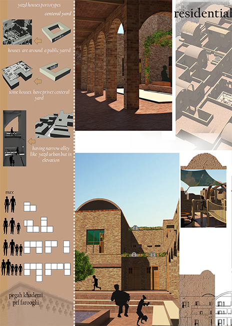
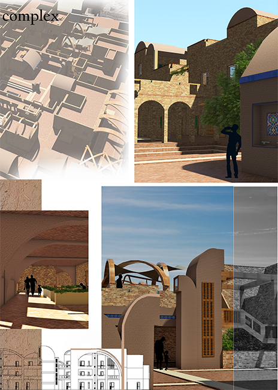
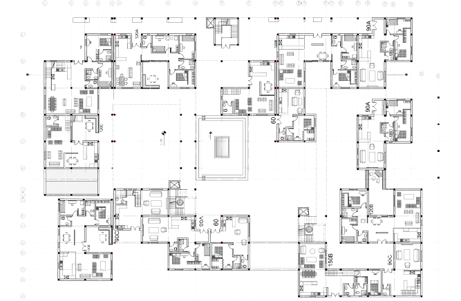

This project challenge was the site location ,it is located in historical fabric in Yazd so we should
be consonant with the site and also fullfill modern poeple needs in the complex.
My design is inspired by centeral yard in Yazd traditional house architecture and orietention of houses
in historical fabric.
▾


I uesed Yazd architecture symbols such as
Badgir,arches and Orsi in my design.
One of important things in this design was
foucosing on public spaces in the complex
to improve social life.
▾

for designing the plan I design 2 or 3 type plan for each kind of family(considering members)
for controling structure and area I used 5*5 M unites.
Back to timeline